適用於 Windows 與瀏覽器 · 專為你的筆設計
用寫的學漢字
用你的筆，逐筆畫寫出每個漢字。Learn Kanji 會在你書寫時檢查每一筆畫，在你快要忘記之前讓每個漢字再次出現，並讓它在七個遊戲中派上用場。
- 2,141個漢字，包含所有常用漢字
- 7個遊戲，一段旅程
- N5–N1JLPT 練習
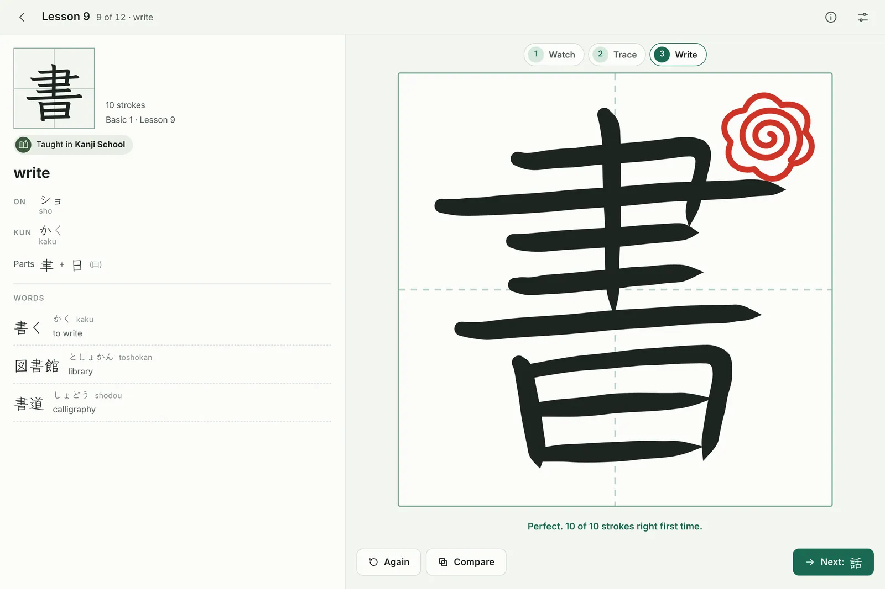
運作方式
看、描、憑記憶寫
日本孩子學漢字的方式，再加上一位耐心的老師檢查每一筆畫。
每一筆畫都檢查
書寫時會檢查順序、方向和形狀，並以紅筆符號為每個漢字評分，從花丸到三角形。
每一個常用漢字
六個級別共 2,141 個漢字，每個只教一次：全部 2,136 個常用漢字，再加上中級的書裡另外五個。基礎和中級依循 Basic Kanji Book 與 Intermediate Kanji Book，讓你可以跟上班上的進度。
記得牢的複習
每個漢字都會在你快要忘記之前再次出現：剛學時常常出現，隨著你越記越牢，出現的次數越來越少。
為 JLPT 做好準備
選擇 N5 至 N1 的 JLPT 級別，或你的教材級別，一切內容都會配合它。練習 JLPT 會出的兩種漢字題型，還有限時測驗。
不用先會假名
每個讀音也會顯示羅馬拼音，所以你可以在學會讀平假名和片假名之前就開始。準備好了，再把它關掉。
離線使用，保護隱私
沒有帳戶、沒有廣告、沒有追蹤。你的進度會留在你的裝置上，你也可以隨時儲存備份。
七個遊戲，一段旅程
把學過的漢字拿來玩
七個遊戲都會用到你學過的漢字，各自位在古代日本的一個角落，每一局都有星星可以贏，還有每日挑戰、任務和旅行者階級。依序玩下去，它們就是一段旅程，從河邊到茶館。
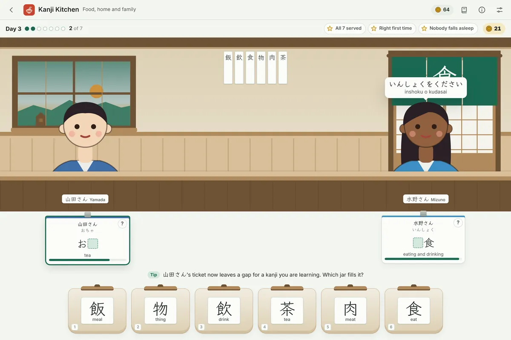
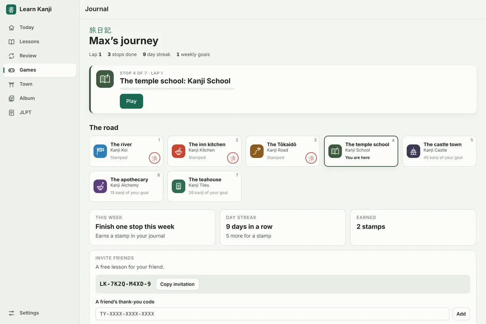
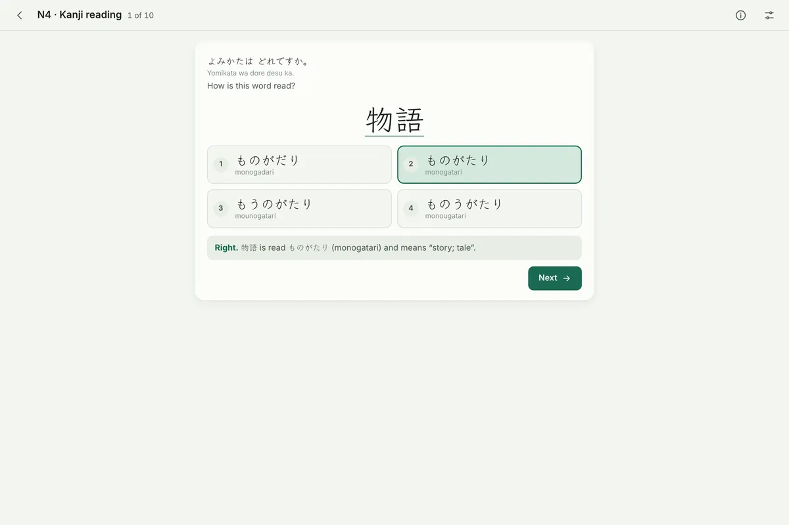
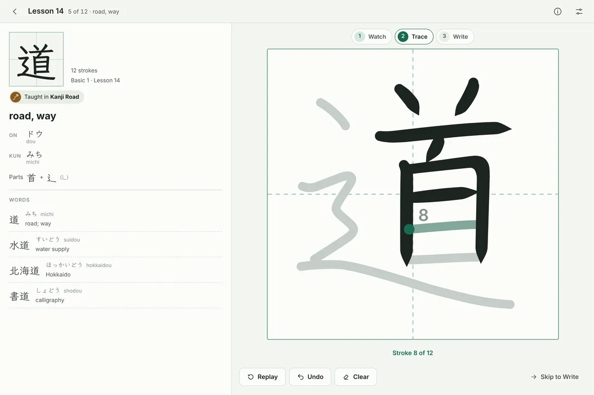
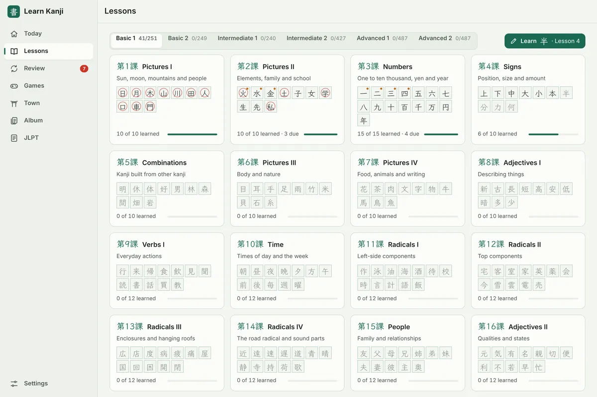
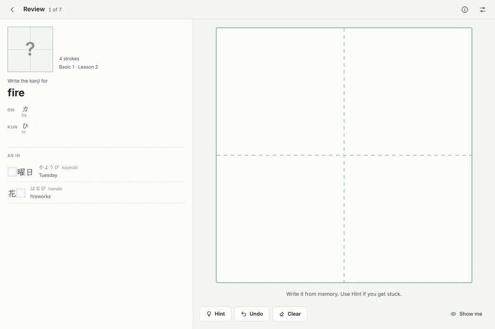
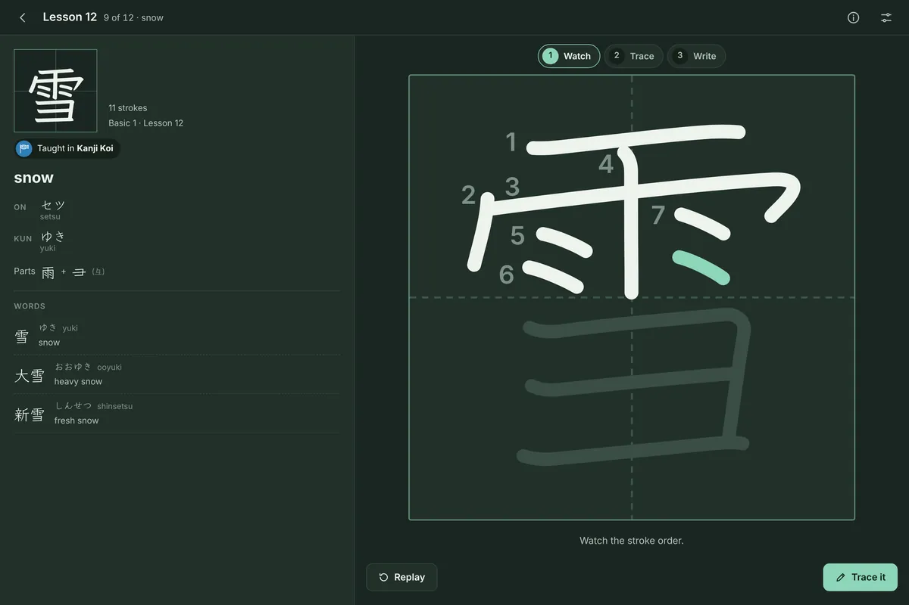
值得再回來的東西
你的小鎮、你的卡片、每天一道謎題
你玩的每一局，都會建起能留下來的東西。
重建一座驛站小鎮
你贏得的每一顆星，都會用在東海道上的一座古老驛站小鎮：渡船碼頭、旅店、寺廟學堂、城門，最後是祭典。
收集每一個漢字
每個漢字都是一張卡片：見到時是紙卡，學會時是墨卡，掌握時是金卡。有些金卡會閃光，要等到卡片變成金卡的那一刻，你才會知道是哪幾張。
每天一道漢字謎題
每天為你的 JLPT 級別出一個由兩個漢字組成的詞語，所有人都一樣。在六次機會內找出它，保持你的連續天數，再分享你的結果。
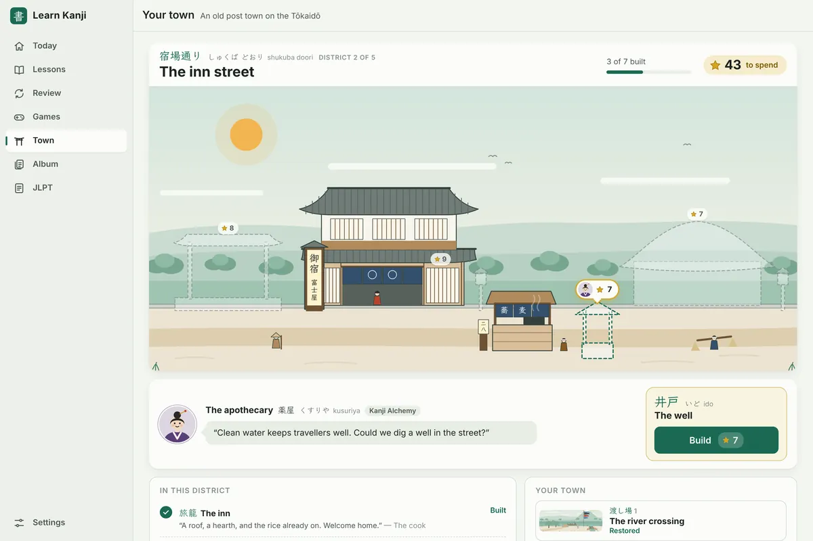
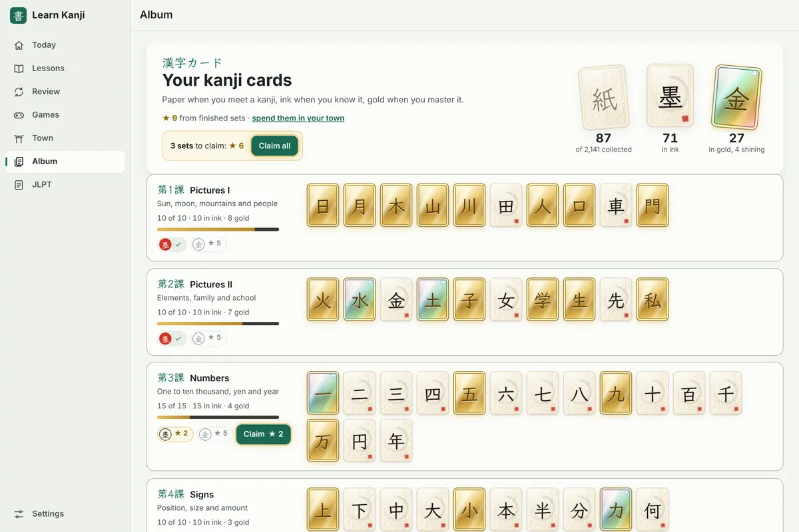
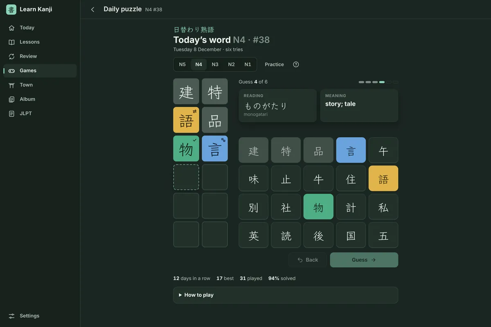
免費開始
從基礎1開始，用完整版走得更遠
基礎1免費，附有課程、複習、遊戲和 JLPT N5 練習。Learn Kanji Full 會開啟全部 2,141 個漢字、所有遊戲，以及從 N5 到 N1 的 JLPT 練習。
免費
€0
基礎1：251 個漢字，附遊戲和 JLPT N5 練習。在旅程中獲得更多的課。
年度
€19.99每年
包含所有內容。第一週免費，可隨時取消。
月度
€2.99每月
包含所有內容，按月使用，可隨時取消。
永久
€39.99一次付清
包含所有內容，永久擁有。只需付款一次，不用訂閱。
價格以歐元計。在 Windows 應用程式中，Microsoft Store 會以你的幣別顯示價格並處理所有購買，訂閱會持續續訂，直到你在 Microsoft 帳戶中取消為止。在瀏覽器中，由 Gumroad 處理購買，並在適用時加收稅金，你再把收據上的授權金鑰輸入應用程式；訂閱會持續續訂，直到你從 Gumroad 收據取消為止。在其中一邊購買，並不會開啟另一邊。免費試用每位客戶限一次。
常見問題
你可能想知道的事
我需要手寫筆嗎？
不需要。Learn Kanji 是為手寫筆設計的，例如 Surface Pen、iPad 上的 Apple Pencil，或你的裝置支援的任何手寫筆，但它也能用手指在觸控螢幕上書寫，或用滑鼠。用手寫筆時，你可以把手掌放在螢幕上；在 Windows 上，你還可以把筆翻過來擦除，並按住筆的側邊按鈕取得提示。
可以在哪些裝置上使用？
Windows 10 和 Windows 11 的電腦、平板與二合一裝置，從 Microsoft Store 取得。在 Mac、iPad、Android 平板或手機，或 Chromebook 上，請在瀏覽器中使用，再從瀏覽器的選單安裝（iPad 上：點「分享」，再點「加入主畫面」）。安裝後即可離線使用。
我一定要會平假名和片假名嗎？
不需要。每個讀音也會顯示羅馬拼音，所以你在還看不懂假名時就能開始，之後再把羅馬拼音關掉。
可以配合我的班級使用嗎？
可以。基礎和中級依照 Basic Kanji Book 與 Intermediate Kanji Book 各課的順序。把你的教材級別設成你的目標，再停在你的班級進行到的那一課。Learn Kanji 與這些書的出版社沒有任何關聯。
如果我取消訂閱會怎麼樣？
完整版在你已付費的期限結束前都保持開放。之後，基礎1、你已獲得的課和你的進度都會保留。你可以隨時在 account.microsoft.com/services 取消；在瀏覽器中，則從 Gumroad 收據中的連結取消。
我的進度是私密的嗎？
是的。Learn Kanji 可離線使用，並把你的進度保存在你的裝置上。它沒有帳戶、沒有廣告，也沒有追蹤。詳見隱私權政策。
用過 Learn Kanji 先前的網頁版嗎？
它把你的進度保存在你當時使用的瀏覽器中，網址是 maximsf08.github.io/learn-kanji。請在同一個瀏覽器中開啟那個網址：它會把你的進度帶到這裡，或存成備份檔案供 Windows 應用程式使用。